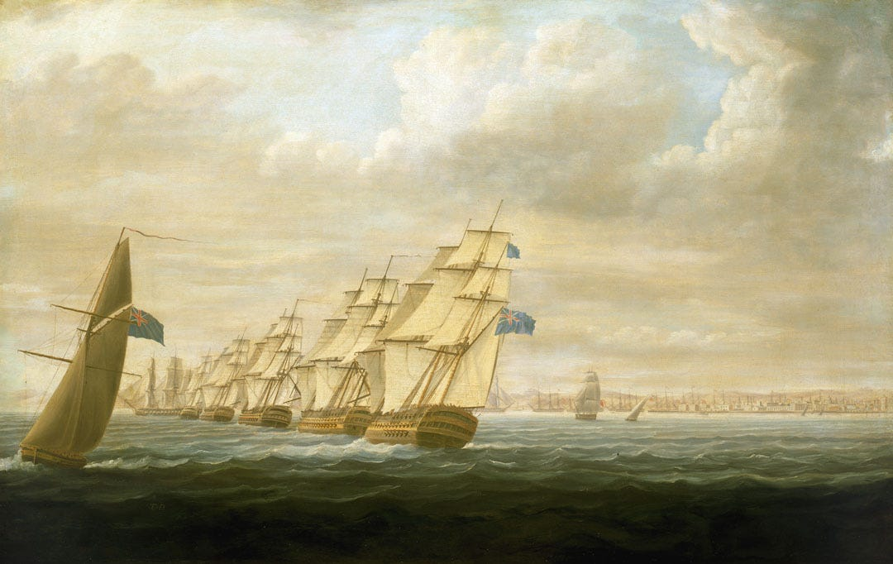
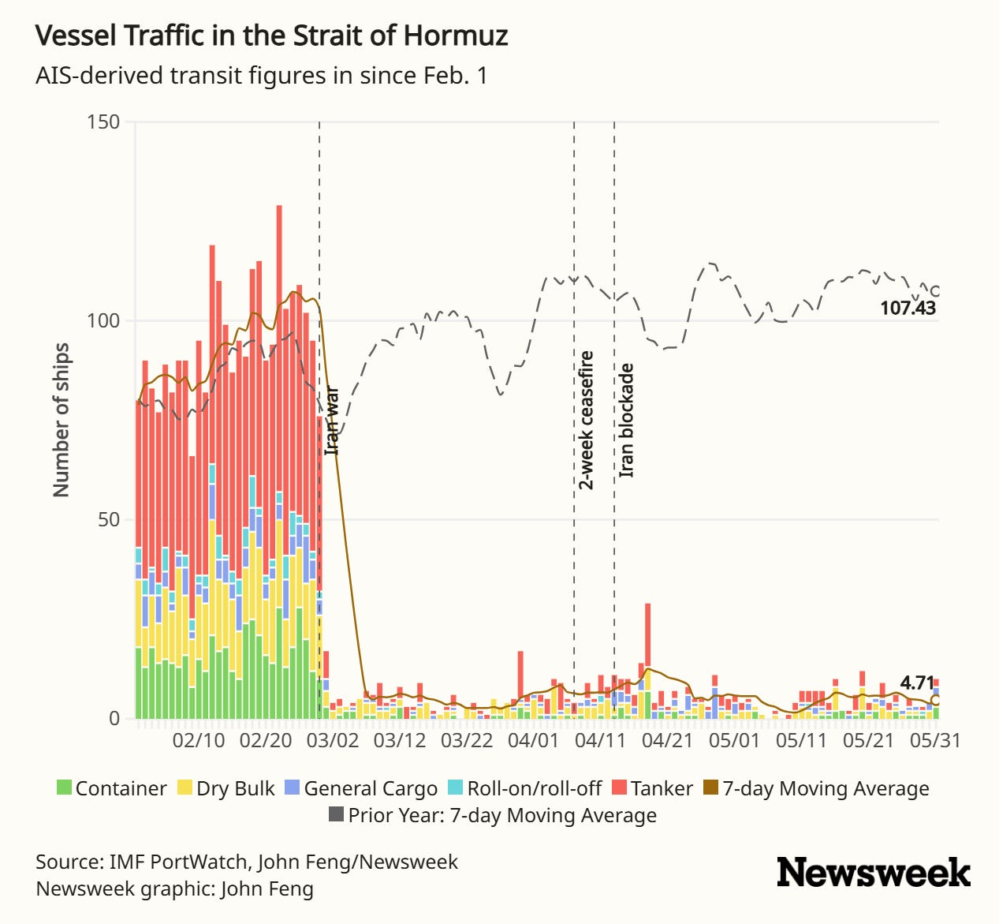
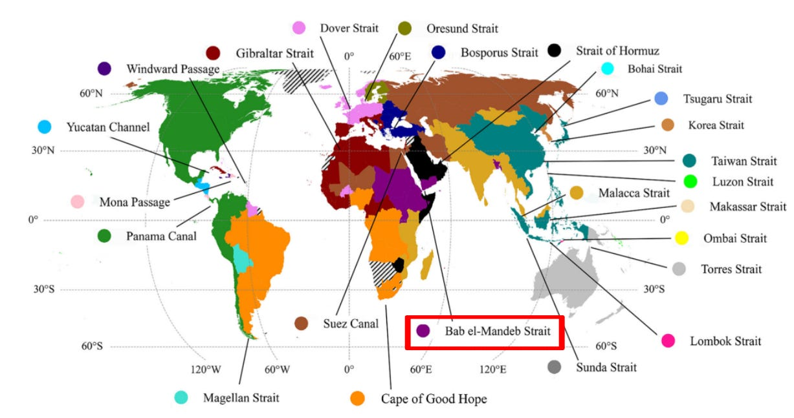

Naval Blockades and Maritime Chokepoints

{kind=link}
On February 28th, the United States and Israel launched massive air strikes against Iran. Within hours, the Iranian military was broadcasting warnings that they would not permit any ships to pass through the Strait of Hormuz, the only entrance to the Persian Gulf that accounts for 21% of global petroleum consumption.1 Shipping traffic immediately fell 70%. Over the next few days, Iran attacked several tankers. On March 2nd, the Iranian military officially confirmed the Strait was closed. Shipping insurance groups warned that they were ending war-risk coverage, and labor organizations declared the Strait a High Risk Area, triggering hazard pay, higher death compensation, and a right to refuse to sail in the area.
Over the next two weeks, Iran announced that ships from certain countries (e.g. China, Russia, India, Pakistan) or those that paid a hefty toll would be allowed through the Strait. On April 13th, after two days of negotiations ended without an agreement, the United States announced its own blockade of any ships traveling to or from Iranian ports. The U.S. blockade intercepted ships that attempted to pass and turned them around. Most complied. Within a week, U.S. forces had fired on, boarded, and seized several ships. The result has been a dramatic drop in the number of ships traveling the Strait of Hormuz, as shown in Figure 2:

Naval blockades are less common than other foreign policy actions, but they have played a dramatic role in many conflicts and crises, such as the Cuban Missile Crisis. Based on the cases that we do have, what can we say about blockades? How do blockades work? What are their effects? Let’s see what the research says.
What is a Blockade
A blockade is the use of troops or warships to isolate an enemy area by preventing the passage of persons or supplies.2 It can be on land or at sea, and may occur in wartime or peacetime. Most blockades take place at sea during war.
A siege is similar to a blockade, but a siege is usually around a single city with the intention to conquer it, while a blockade is often directed at a larger area without intentions to take control over physical territory. Blockades, like sanctions, aim to limit commerce, but sanctions are legal barriers enforced domestically, and blockades are physical barriers imposed on other nations or, in the American Civil War, separatist forces.
Even as the terminology around blockades can be ambiguous, blockades come in a range of styles that have changed over time. Blockades can be close or distant. Close blockades would stay in sight of cities and greatly limit opposing forces’ ability to move while still staying out of range of onshore cannons. Distant blockades cover an expanded area, requiring more forces or sacrificing control. Other important characteristics of a blockade are how far they are from friendly bases, how permeable they are for vessels to slip through, and their enforcement model.3
Enforcement models describe the different ways that a blockade can respond to blockade-runners. Paper blockades are legal barriers without enforcement, more like an intention than an actual blockade. Presence blockades have a physical presence and the enforcing nation(s) may check cargoes and manifests. Martial blockades utilize a range of enforcement options to directly intervene against blockade-runners. Total blockades are similar to martial blockades but prevent all ships, including neutral ships, from passing. The 2026 Strait of Hormuz Blockades by both Iran and the U.S. could be considered a total blockade.
Historically and colloquially, blockades usually refer to naval barriers during wartime. Athens and Sparta used blockades during the Peloponnesian War. Blockades have also featured in the American Revolutionary War, the Napoleonic Wars, and the American Civil War.
Blockades changed in World War I with the development of sea mines and submarines. The Germans announced unrestricted submarine and mine warfare, and the Allies declared they would detain any ship carrying goods to or from the enemy. Ultimately, the Allied blockades were seen as effective, albeit slow in their impact. Before joining World War II, the United States criticized British blockade measures for interfering with their neutral trading, but once the United States joined the war it found blockades quite useful, especially in the Pacific theater.4
Blockades are sometimes referred to as quarantines, interdictions, and interceptions, because these alternative terms are sometimes seen as less provocative. During the 1991 Gulf War, U.S. President George H. W. Bush called U.S. actions interdiction and interception, hoping to prevent the U.S. from appearing too aggressive.5
Blockade Laws and Norms
International laws and norms on blockades come from several sources. The U.N. Charter allows blockades if they are for individual or collective self-defense or if the Security Council has authorized them. Blockade rules are codified in the recognized but non-binding San Remo Manual.6 These include:
- Blockades must be declared with their details, and all affected parties must be notified
- Blockades must be effective with forces present (which rules out ‘paper blockades’)
- Blockades cannot be established only to starve a civilian population, and passage must be provided for sufficient food to prevent starvation.
What Makes a Blockade Effective?
It is difficult to assess what makes blockades effective since they are relatively rare and usually part of much larger war efforts. One analysis was able to collect 41 cases by going back to 425 BC, which is commendable but raises concerns about whether the lessons from those cases still hold.
The top two factors are superior sea power and the combination of operations ashore with ground or air forces. The ability to resupply and repair, preferably with nearby bases, and to maintain the blockade for a long period also factors into success. Targets with limited land routes are more susceptible to sanctions. However, targets that adapt to blockades by finding new allies or improving their capabilities are better able to resist them.7
Considering how blockades had evolved with new capabilities and technologies, factors that did not even exist before will likely be important to the future. One is the role of land-based forces such as aircraft and missiles, which could allow a country to break a blockade even with a smaller navy.8 Another is the importance of maritime chokepoints in world trade, which we discuss further later in the piece.
Some research has tried to isolate the effects of blockades on a target beyond their usefulness in a larger conflict. The Allied sanctions during World War I contributed to severe famines in Lebanon and Syria. Both countries were also subject to locust plague, but so was British-controlled Cyprus, which avoided famine through food imports. The Allied blockade of neutral Greece led to food shortages and starvation before it was called off.9 During World War II, Allied blockades stopped the Red Cross from shipping relief parcels to concentration camps in Germany.10
In 2007, Israel imposed a blockade on the Gaza Strip with Egypt’s cooperation. Gaza’s exports decreased by 99%, and non-energy imports decreased by 75%, as some humanitarian supplies were still allowed. Welfare, measured by household consumption, declined by 14%-27%.11
Maritime Chokepoints
The blockade of the Strait of Hormuz is unique in that it is the deliberate closure of a maritime chokepoint. A maritime chokepoint is a narrow passageway where shipping routes concentrate. To give a sense of their importance, 80% of international trade volume is shipped over water, and two chokepoints, the Taiwan Strait and the Malacca Strait, are each used by 20% of all maritime trade. The Suez Canal sees 15% of maritime trade and received significant media attention in 2021 when it was blocked for five days after the ship Ever Given ran aground.12
One study calculated the expected costs of checkpoint disruptions to be $10.7 billion. The researchers looked at 24 key chokepoints, the amount of trade that goes through each one, and the risk of disruption from natural disasters such as cyclones, droughts, earthquakes, and human events such as interstate conflict, terrorism, and piracy. They also considered whether the alternative route was long - as with the Panama Canal - or short - as with the Taiwan Strait. The Strait of Hormuz is one of four chokepoints that have no alternative route.13
In 2024, Houthi forces in Yemen imposed a naval blockade on the Bab-el-Mandeb Strait as part of a larger conflict. The Bab-el-Mandeb Strait is a chokepoint in naval passage from the Mediterranean Sea to the Indian Ocean via the Red Sea and Suez Canal. Without a navy, the Houthi forces used missiles and drones to attack passing ships. Shipping and insurance costs surged, and daily trading volume through the Strait dropped 57.5% as many ships opted to take the long way around Africa and the Cape of Good Hope.14

Acknowledgements: Thanks to Emily Fornof and Lucy Ouckama for draft comments. Thanks to Coefficient Giving for supporting this Living Lit Review.
Footnotes
Verschuur, Jasper, Johannes Lumma, and Jim W. Hall. 2025. “Systemic Impacts of Disruptions at Maritime Chokepoints.” Nature Communications 16(1): 10421. doi:10.1038/s41467-025-65403-w.↩︎
“Blockade.” 2026. In Merriam-Webster.Com Dictionary, Merriam-Webster. https://www.merriam-webster.com/dictionary/blockade.↩︎
Biggs, Adam, Dan Xu, Joshua Roaf, and Tatana Olson. 2021. “Theories of Naval Blockades and Their Application in the Twenty-First Century.” Naval War College Review 74(1). https://digital-commons.usnwc.edu/cgi/viewcontent.cgi?article=8166&context=nwc-review.↩︎
Merli, Frank J., Robert H. Ferrell, and Alexander Deconde. 2002. “Blockades.” In Encyclopedia of American Foreign Policy Edition 2., eds. Richard Dean Burns, Fredrik Logevall, and Louise B. Ketz. New York, N.Y: Charles Scribner’s Sons.↩︎
Merli et al 2002.↩︎
Biggs et al 2021.↩︎
Biggs et al 2021. Cunningham, David T. 1987. “The Naval Blockade: A Study of Factors Necessary for Effective Utilization.” https://apps.dtic.mil/sti/html/tr/ADA185939/ (June 30, 2026). Elleman, Bruce A., and Sarah CM Paine. 2005. “Naval Blockades and Seapower.” Strategies and Counter. https://api.taylorfrancis.com/content/books/mono/download?identifierName=doi&identifierValue=10.4324/9780203001370&type=googlepdf (April 26, 2026).↩︎
Biggs et al 2021.↩︎
Jones, Heather. 2024. “A Forgotten Front? The Mediterranean Blockade in the First World War.” The International History Review 46(4): 426–43. doi:10.1080/07075332.2024.2344831.↩︎
Zweig, Ronald W. 1998. “Feeding the Camps: Allied Blockade Policy and the Relief of Concentration Camps in Germany, 1944–1945.” The Historical Journal 41(3): 825–51.↩︎
Etkes, Haggay, and Assaf Zimring. 2015. “When Trade Stops: Lessons from the Gaza Blockade 2007–2010.” Journal of International Economics 95(1): 16–27. doi:10.1016/j.jinteco.2014.10.005.↩︎
Veschuur et al 2025.↩︎
Veschuur et al 2025.↩︎
Sainz, Victoria. 2025. “The Red Sea Shipping Crisis (2024–2025): Houthi Attacks and Global Trade Disruption.” Atlas Institute for International Affairs. https://atlasinstitute.org/the-red-sea-shipping-crisis-2024-2025-houthi-attacks-and-global-trade-disruption/ (June 30, 2026).↩︎